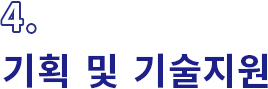

기술 기획지원 / 기술 솔루션 구축 / 기술 역량 제고 /시장 기술 정보 분석 / 지식재산권
| 지원 사업명 |
요약 | 지원대상 | 수행기관 | 예비 창업 |
창업 후 3년 이내 기업 |
창업 후 3년 초과 5년 이내 기업 |
창업 후 5년 초과 7년 이내 기업 |
창업 후 7년 초과 기업 |
자료 출처 |
|---|---|---|---|---|---|---|---|---|---|
| 중소기업 R&D기획 지원사업 | 초기 R&D 계획에 필요한 기술개발 및 사업화에 대한 전략을 제시하여 기술개발에서 마케팅에 이르는 전주기적 R&D 기획 지원 사업 | 광주, 전남, 전북, 제주 지역 중소중견기업 | 중소기업 기술정보 진흥원 |
ㅇ | ㅇ | ㅇ | ㅇ | 링크1 | |
| 2020년도 스마트공장 보급·확산사업 공고(클라우드기반 솔루션개발사업) | 클라우드 기반으로 협·단체 및 중소기업 컨소시엄에서 공동으로 활용할 수 있는 정보화 솔루션 구축을 지원함으로써 중소기업 정보화 애로 해소 | 중소기업을 회원사로 하는 협동조합(전국, 지방, 사업), 협동조합연합회 (업종, 지역), 업종별 협회･사업자단체, 수요·공급기업 포함 5개사 이상 중소기업 컨소시엄 | 중소벤처 기업부 |
ㅇ | ㅇ | ㅇ | ㅇ | 링크1 | |
| 중소기업 지원 선도연구기관 협력기술개발 | 중소기업 지원 인프라가 우수한 연구기관을 활용한 R&D 전주기 지원으로 중소기업의 기술혁신역량 제고 | 사전진단을 거쳐 선도연구기관이 추천한 중소기업기본법 제2조의 규정에 따른 중소기업 | 중소벤처 기업부 |
ㅇ | ㅇ | ㅇ | ㅇ | 링크1 | |
| 중소기업 R&D 역량제고 | R&D 기획역량이 부족한 중소기업에게 교육과 기획을 지원하고, 현장의 기술애로를 해결할 수 있도록 지원 | 과제별 자격기준을 충족하는 중소기업 | 중소벤처 기업부 |
ㅇ | ㅇ | ㅇ | ㅇ | 링크1 | |
| 프로젝트 R&D 지원사업 | 산학연 및 혁신지원기관이 보유한 기술혁신자원의 활용을 통해 신기술 및 신제품 개발을 위한 핵심기술개발, 기술혁신역량강화를 위해 기업이 제품 생산에 필요한 핵심 애로기술 개발 지원 | 중소기업(산업단지내 입주 및 미니클러스터 활동기업) | 한국산업 단지공단 |
ㅇ | ㅇ | ㅇ | ㅇ | 링크1 | |
| 기술․시장 정보분석 지원사업 | 중소기업의 R&D나 상품기획 단계에 필요한 국내외 기술과 시장에 관한 정보를 제공하여 기술개발, 시장 확대, 사업화 타진에 조력 | 광주, 전남, 전북, 제주 지역 중소중견기업 | 한국과학기술정보연구원(KISTI) | ㅇ | ㅇ | ㅇ | ㅇ | 링크1 | |
| 산업재산권 출원 지원 | 상품출원, 특허 및 실용신안출원, KGMP 인증, 해외특허, PCT출원 등의 국내외 산업재산권 출원 지원 | 중소기업(산업단지내 입주 및 미니클러스터 활동기업) | 한국산업 단지공단 |
ㅇ | ㅇ | ㅇ | ㅇ | 링크1 |
협력 기술 개발
| 지원 사업명 |
요약 | 지원대상 | 수행기관 | 예비 창업 |
창업 후 3년 이내 기업 |
창업 후 3년 초과 5년 이내 기업 |
창업 후 5년 초과 7년 이내 기업 |
창업 후 7년 초과 기업 |
자료 출처 |
|---|---|---|---|---|---|---|---|---|---|
| 산학연 Collabo R/D |
산학연 협력R&D 활성화를 통한 중소기업 일자리 창출과 혁신성장 촉진 | 기업부설연구소 또는 연구개발전담부서 보유 중소기업이거나 설립계획이 있는 모든 중소기업 | 중소벤처 기업부 |
ㅇ | ㅇ | ㅇ | ㅇ | 링크1 | |
| 중소기업 네트워크형 기술개발 |
중소기업 간 네트워크 구성을 통해 즉시 상용화가 가능한 시장주도형 R&BD 지원 | 혁신형 중소기업(기술개발) 및 사업화 지원 기업 등으로 구성된 네트워크 협력체 | 중소벤처 기업부 |
ㅇ | ㅇ | ㅇ | ㅇ | 링크1 | |
| 기술이전 활성화 지원 |
기술이전 실패에 대한 부담감 해소 및 기술이전 촉진을 위하여 국내외 기업, 대학, 연구소, 정부출연(연) 등이 보유한 연구개발 성과물에 대한 사용권리 획득 지원 기술이전 활성화 지원 | 중소기업(산업단지내 입주 및 미니클러스터 활동기업) | 한국산업 단지공단 |
ㅇ | ㅇ | ㅇ | ㅇ | 링크1 |